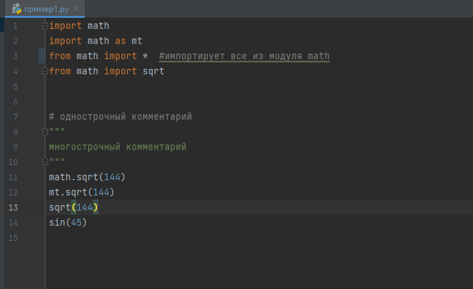
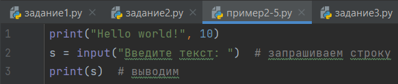
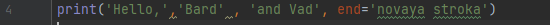
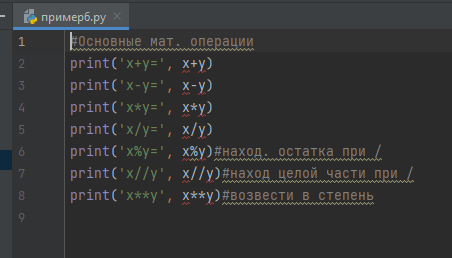
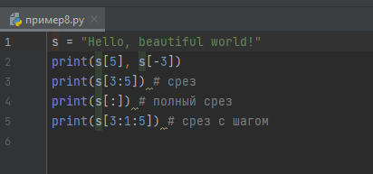
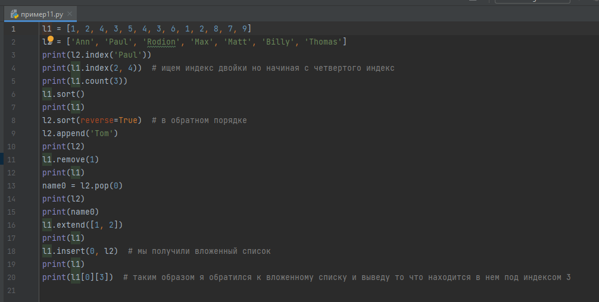
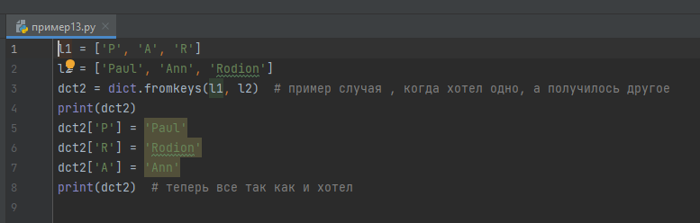

Меню
Глава I. Основы работы яп Python. Переменные, их типы, и операции над ними.
Оглавление
Параграф 1. Основы.
Все яп переводятся в бинарный код для обработки процессором, этим занимается компилятор. Но “компилятор” в Python называется интерпретатор, он переводит python код в байт код. Это позволяет сильно упростить язык. Но не думайте, что у Python нет минусов, он работает заметно медленнее других яп.
В Python существуют различные библиотеки, расширяющие возможности программирования. Чтобы ими пользоваться нужно прописать команду import.

Чтобы вывести информацию в консоль, в Python используется команда print(). Если вы хотите вывести число, просто напишите его в скобках, если же вы хотите вывести строку, то она должна быть заключена в любые кавычки, чтобы вывести переменную, нужно просто ввести её название, если нужно вывести несколько значений подряд, они записываются через запятую. Для того чтобы запросить пользовательский ввод используется команда input, она может принимать текст, который будет выведен в консоль, пользовательская информация будет строкой

Текст можно выводить форматировано, используя обратный слеш и некоторые буквы английского алфавита
\\ - так можно вывести \
\’ или \” – выводит кавычки
\n – выводит следующий далее текст с новой строки
\t – добавит табуляцию

Python значения, написанные через “,”, выводит через пробел, пробел можно заменить чем угодно, с помощью sep.

Также у функции print есть параметр end, по умолчанию он равен “\n”.

Параграф 2. Переменные.
Переменные – это основа любого языка программирования. У переменных всегда есть названия. В Python название переменной не может начинаться с числа, также вы ,конечно, можете назвать переменную кириллицей, а кто-то даже сможет мефодицей, но так не принято делать. Переменные хранят в себе значения, и ,как ни странно, их можно менять. Также во многих языках программирования присутствуют константы. Константы – это как переменные, но их нельзя менять. В Python нет констант, но вместо этого вы можете написать название переменной большими буквами, как в настоящем языке программирования. Оператором присвоения является знак “=”.
Переменные бывают нескольких видов:
- Целочисленные – int (от англ. integer)
- Числа с плавающей точкой – float
- Строковые – str (от англ. string)
- Смысловые – bool
- Список – list
- Словарь – dict
(int, float, str – команды, которые можно использовать для преобразования из одного типа в другой)
Параграф 3. Операции над целочисленными переменными и переменными с плавающей точкой.
Помимо основных вычеслительных операций присутствуют такие как целочисленное деление “//” и остаток от деления “%”.

Параграф 4. Операции над строками.
Строки можно складывать и умножать. Если вывести сложение строк, они будут написаны слитно.

К строкам можно обращаться по индексу, индекс первого символа строки – 0, индекс последнего символа строки – -1. Также с помощью индексов можно извлекать срезы.

Если нужно узнать количество символов в строке, используется функция len().

У каждого символа есть свой код в кодировке ASCII (American standard code for information interchange). Его можно узнать с помощью команды ord. Также из числа можно получить букву с помощью команды chr.

Методы строк
# Поиск подстроки в строке. Возвращает номер первого вхождения или -1
S.find(str, [start],[end])
# Поиск подстроки в строке. Возвращает номер последнего вхождения или -1
S.rfind(str, [start],[end])
# Поиск подстроки в строке. Возвращает номер первого вхождения или вызывает ValueError
S.index(str, [start],[end])
# Поиск подстроки в строке. Возвращает номер последнего вхождения или вызывает ValueError
S.rindex(str, [start],[end])
# Замена шаблона
S.replace(шаблон, замена)
# Разбиение строки по разделителю
S.split(символ)
# Состоит ли строка из цифр
S.isdigit()
# Состоит ли строка из букв
S.isalpha()
# Состоит ли строка из цифр или букв
S.isalnum()
# Состоит ли строка из символов в нижнем регистре
S.islower()
# Состоит ли строка из символов в верхнем регистре
S.isupper()
# Состоит ли строка из неотображаемых символов (пробел, символ перевода страницы ('\f'), "новая строка" ('\n'), "перевод каретки" ('\r'), "горизонтальная табуляция" ('\t') и "вертикальная табуляция" ('\v'))
S.isspace()
# Начинаются ли слова в строке с заглавной буквы
S.istitle()
# Преобразование строки к верхнему регистру
S.upper()
# Преобразование строки к нижнему регистру
S.lower()
# Начинается ли строка S с шаблона str
S.startswith(str)
# Заканчивается ли строка S шаблоном str
S.endswith(str)
# Сборка строки из списка с разделителем S
S.join(список)
# Символ в его код ASCII
ord(символ)
# Код ASCII в символ
chr(число)
# Переводит первый символ строки в верхний регистр, а все остальные в нижний
S.capitalize()
# Возвращает отцентрованную строку, по краям которой стоит символ fill (пробел по умолчанию)
S.center(width, [fill])
# Возвращает количество непересекающихся вхождений подстроки в диапазоне [начало, конец] (0 и длина строки по умолчанию)
S.count(str, [start],[end])
# Возвращает копию строки, в которой все символы табуляции заменяются одним или несколькими пробелами, в зависимости от текущего столбца. Если TabSize не указан, размер табуляции полагается равным 8 пробелам
S.expandtabs([tabsize])
# Удаление пробельных символов в начале строки
S.lstrip([chars])
# Удаление пробельных символов в конце строки
S.rstrip([chars])
# Удаление пробельных символов в начале и в конце строки
S.strip([chars])
# Возвращает кортеж, содержащий часть перед первым шаблоном, сам шаблон, и часть после шаблона. Если шаблон не найден, возвращается кортеж, содержащий саму строку, а затем две пустых строки
S.partition(шаблон)
# Возвращает кортеж, содержащий часть перед последним шаблоном, сам шаблон, и часть после шаблона. Если шаблон не найден, возвращается кортеж, содержащий две пустых строки, а затем саму строку
S.rpartition(sep)
# Переводит символы нижнего регистра в верхний, а верхнего – в нижний
S.swapcase()
# Первую букву каждого слова переводит в верхний регистр, а все остальные в нижний
S.title()
# Делает длину строки не меньшей width, по необходимости заполняя первые символы нулями
S.zfill(width)
# Делает длину строки не меньшей width, по необходимости заполняя последние символы символом fillchar
S.ljust(width, fillchar=" ")
# Делает длину строки не меньшей width, по необходимости заполняя первые символы символом fillchar
S.rjust(width, fillchar=" ")
Для полного усвоения рекомендуется по пробовать на деле все эти методы и вам наверно кажется что большая их часть не пригодится, но это не так.
Параграф 5. Списки и операции над ними.
Список – последовательность данных разных типов. У списка тоже есть нумерация, такая же как у строки. Команда len также справедлива для списков. Можно делать срезы списков. Метод index принимает значение и возвращает индекс этого значения. Метод count принимает значение, а возвращает количество его повторений. Метод sort сортирует список. Метод append принимает значение добавляет его в конец списка. Метод remove удаляет полученное значение из списка. Метод pop удаляет значение по индексу. Метод extend склеивает два списка, тоже самое что и сложение двух списков. Метод insert принимает индекс и вставляет значение. Также существуют функции: min, max, sum. Можно проверять, есть ли значение в списке с помощью in или not in.

Параграф 6. Словари.
Словари – это не упорядоченные списки. Словарь содержит пары ключ : значение. К элементам словаря нужно обращаться по ключу. Словари могут пригодиться при де кодировке или кодировке. В целом словари самый мало используемый тип, но упомянуть их стоит. Запись словарей выглядит так.

словарь можно создать и так.

Параграф 7. Переменные логического типа.
Переменные логического типа хранят в себе одно из двух значений True или False.
На этом все про логические переменные.
Итоги главы
В этой главе мы познакомились со всеми переменными и с тем, что с ними можно делать,
с основами работы яп python.